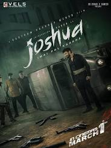

Joshva (2015) is a Tamil action film directed by Karthik Thangavel, featuring Suriya in the lead role.
The story follows Joshva, a young man who becomes embroiled in a dangerous conflict involving his family's honor and a powerful adversary.
The film blends action and drama, highlighting Suriya's dynamic performance and his character's journey through adversity.
Joshva explores themes of loyalty, bravery, and redemption as Joshva fights to protect his loved ones.
The film's engaging plot and Suriya's strong acting contributed to its positive reception.